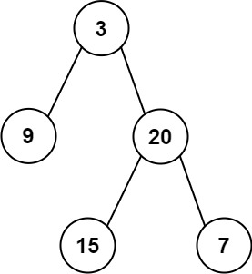
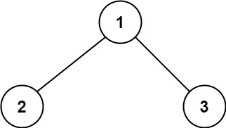

二叉树
遍历（非递归）
1 2 3 4 5 6 7 8 9 10 11 12 13 14 15 16 17 18 class Solution { public List<Integer> preorderTraversal (TreeNode root) { LinkedList<TreeNode> list = new LinkedList <>(); TreeNode curr = root; List<Integer> res = new ArrayList <>(); while (!list.isEmpty() || curr != null ){ if (curr != null ){ res.add(curr.val); list.push(curr); curr = curr.left; }else { TreeNode pop = list.pop(); curr = pop.right; } } return res; } }
1 2 3 4 5 6 7 8 9 10 11 12 13 14 15 16 17 18 class Solution { public List<Integer> inorderTraversal (TreeNode root) { LinkedList<TreeNode> list = new LinkedList <>(); TreeNode curr = root; List<Integer> res = new ArrayList <>(); while (!list.isEmpty() || curr != null ){ if (curr != null ){ list.push(curr); curr = curr.left; }else { TreeNode pop = list.pop(); res.add(pop.val); curr = pop.right; } } return res; } }
1 2 3 4 5 6 7 8 9 10 11 12 13 14 15 16 17 18 19 20 21 22 23 class Solution { public List<Integer> postorderTraversal (TreeNode root) { LinkedList<TreeNode> list = new LinkedList <>(); TreeNode curr = root; TreeNode pop = null ; List<Integer> res = new ArrayList <>(); while (!list.isEmpty() || curr != null ){ if (curr != null ){ list.push(curr); curr = curr.left; }else { TreeNode peek = list.peek(); if (peek.right == null || peek.right == pop){ pop = list.pop(); res.add(pop.val); }else { curr = peek.right; } } } return res; } }
层序遍历——模板
1 2 3 4 5 6 7 8 9 10 11 12 13 14 15 16 17 18 19 20 21 public void layerTraversal (TreeNode root) { LinkedList<TreeNode> queue = new LinkedList <>(); if (root != null ){ queue.offer(root); } while (!queue.isEmpty()){ int n = queue.size(); while (n-- > 0 ){ TreeNode poll = queue.pop(); if (poll.left != null ){ queue.offer(poll.left); } if (poll.right != null ){ queue.offer(poll.right); } } } }
DFS
简单
给你一个二叉树的根节点 root ， 检查它是否轴对称。
示例 1：
img
1 2 输入：root = [1,2,2,3,4,4,3] 输出：true
算法分析：
递归：
左子树和右子树对称，只要左子树的左子树与右子树的右子树对称相同，以及左子树的右子树和右子树的左子树相同即可。
1 2 3 4 5 6 7 8 9 10 11 12 13 14 15 16 17 18 19 20 class Solution { public boolean isSymmetric (TreeNode root) { return check(root.left, root.right); } public boolean check (TreeNode left, TreeNode right) { if (left == null && right == null ){ return true ; } if (left == null || right == null ){ return false ; } if (left.val != right.val){ return false ; } return check(left.left, right.right) && check(right.left, left.right); } }
给定一个二叉树，找出其最大深度。
二叉树的深度为根节点到最远叶子节点的最长路径上的节点数。
说明: 叶子节点是指没有子节点的节点。
示例：
给定二叉树 [3,9,20,null,null,15,7]，
返回它的最大深度 3 。
算法分析：
递归：
1 2 3 4 5 6 7 8 9 10 11 class Solution { public int maxDepth (TreeNode root) { if (root == null ){ return 0 ; } int left = maxDepth(root.left); int right = maxDepth(root.right); return Math.max(left, right) + 1 ; } }
迭代：
后序遍历：
每当curr结点为
null的时候，说明遍历到叶子结点了，记录栈的深度。过程中栈的深度会发生变化，不断更新，遍历完毕之后，返回最大栈深度也就是树的最大深度。
1 2 3 4 5 6 7 8 9 10 11 12 13 14 15 16 17 18 19 20 21 22 23 class Solution { public int maxDepth (TreeNode root) { TreeNode curr = root; TreeNode pop = null ; LinkedList<TreeNode> list = new LinkedList <>(); int max = 0 ; while (curr != null || !list.isEmpty()){ if (curr != null ){ list.push(curr); curr = curr.left; }else { max = Math.max(max, list.size()); TreeNode peek = list.peek(); if (peek.right == null || pop == peek.right){ pop = list.pop(); }else { curr = peek.right; } } } return max; } }
层序遍历：
层数就是最大深度：
1 2 3 4 5 6 7 8 9 10 11 12 13 14 15 16 17 18 19 20 21 22 23 24 class Solution { public int maxDepth (TreeNode root) { if (root == null ) { return 0 ; } Queue<TreeNode> queue = new LinkedList <>(); queue.offer(root); int level = 0 ; while (!queue.isEmpty()){ level++; int size = queue.size(); for (int i = 0 ; i < size; i++){ TreeNode node = queue.poll(); if (node.left != null ){ queue.offer(node.left); } if (node.right != null ){ queue.offer(node.right); } } } return level; } }
给你两棵二叉树的根节点 p 和 q
，编写一个函数来检验这两棵树是否相同。
如果两个树在结构上相同，并且节点具有相同的值，则认为它们是相同的。
示例 1：
img
1 2 输入：p = [1,2,3], q = [1,2,3] 输出：true
递归
1 2 3 4 5 6 7 8 9 10 11 12 13 14 15 16 class Solution { public boolean isSameTree (TreeNode p, TreeNode q) { if (p == null && q == null ){ return true ; } if (p == null || q == null ){ return false ; } if (p.val != q.val){ return false ; } return isSameTree(p.left, q.left) && isSameTree(p.right, q.right); } }
给你一棵二叉树的根节点 root
，翻转这棵二叉树，并返回其根节点。
示例 1：
img
1 2 输入：root = [4,2,7,1,3,6,9] 输出：[4,7,2,9,6,3,1]
递归
1 2 3 4 5 6 7 8 9 10 11 12 13 14 15 class Solution { public TreeNode invertTree (TreeNode root) { if (root == null ){ return null ; } TreeNode left = root.left; root.left = root.right; root.right = left; invertTree(root.left); invertTree(root.right); return root; } }
给你二叉树的根节点 root 和一个表示目标和的整数
targetSum 。判断该树中是否存在
根节点到叶子节点
的路径，这条路径上所有节点值相加等于目标和 targetSum
。如果存在，返回 true ；否则，返回 false
。
叶子节点 是指没有子节点的节点。
示例 1：
img
1 2 3 输入：root = [5,4,8,11,null,13,4,7,2,null,null,null,1], targetSum = 22 输出：true 解释：等于目标和的根节点到叶节点路径如上图所示。
示例 2：
img
1 2 3 4 5 6 输入：root = [1,2,3], targetSum = 5 输出：false 解释：树中存在两条根节点到叶子节点的路径： (1 --> 2): 和为 3 (1 --> 3): 和为 4 不存在 sum = 5 的根节点到叶子节点的路径。
示例 3：
1 2 3 输入：root = [], targetSum = 0 输出：false 解释：由于树是空的，所以不存在根节点到叶子节点的路径。
DFS
终止条件：
结点为空，返回false：说明走到叶子结点但没有发现满足条件的路径
通过targetSum与当前结点的值判断，如果两者相同，
1 2 3 4 5 6 7 8 9 10 11 12 class Solution { public boolean hasPathSum (TreeNode root, int targetSum) { if (root == null ){ return false ; } if (targetSum - root.val == 0 && root.left == null && root.right == null ){ return true ; } return hasPathSum(root.left, targetSum - root.val) || hasPathSum(root.right, targetSum - root.val); } }
给定一个非空二叉树的根节点 root ,
以数组的形式返回每一层节点的平均值。与实际答案相差 10-5
以内的答案可以被接受。
示例 1：
img
1 2 3 4 输入：root = [3,9,20,null,null,15,7] 输出：[3.00000,14.50000,11.00000] 解释：第 0 层的平均值为 3,第 1 层的平均值为 14.5,第 2 层的平均值为 11 。 因此返回 [3, 14.5, 11] 。
示例 2:
img
1 2 输入：root = [3,9,20,15,7] 输出：[3.00000,14.50000,11.00000]
层序遍历
1 2 3 4 5 6 7 8 9 10 11 12 13 14 15 16 17 18 19 20 21 22 23 24 25 26 class Solution { public List<Double> averageOfLevels (TreeNode root) { LinkedList<TreeNode> queue = new LinkedList <>(); List<Double> ans = new ArrayList <>(); queue.add(root); while (!queue.isEmpty()){ int size = queue.size(); double sum = 0 ; for (int i = 0 ; i < size; i++) { TreeNode poll = queue.poll(); sum += poll.val; if (poll.left != null ){ queue.add(poll.left); } if (poll.right != null ){ queue.add((poll.right)); } } ans.add(sum / size); } return ans; } }
给你二叉树的根节点 root ，返回其节点值的
锯齿形层序遍历
。（即先从左往右，再从右往左进行下一层遍历，以此类推，层与层之间交替进行）。
示例 1：
img
1 2 输入：root = [3,9,20,null,null,15,7] 输出：[[3],[20,9],[15,7]]
示例 2：
示例 3：
双端队列 + 层序遍历
锯齿也就是Z字型，奇数层顺序变量，偶数层倒序遍历。
队列正常逻辑添加，结果集可以采用LinkedList作为双向链表，头插尾插。
1 2 3 4 5 6 7 8 9 10 11 12 13 14 15 16 17 18 19 20 21 22 23 24 25 26 27 28 29 30 31 32 class Solution { public List<List<Integer>> zigzagLevelOrder (TreeNode root) { List<List<Integer>> res = new ArrayList <>(); Deque<TreeNode> deque = new ArrayDeque <>(); if (root != null ){ deque.add(root); } while (!deque.isEmpty()){ LinkedList<Integer> tmp = new LinkedList <>(); int size = deque.size(); for (int i = 0 ; i < size; i++) { TreeNode poll = deque.poll(); if (res.size() % 2 == 0 ){ tmp.addLast(poll.val); }else { tmp.addFirst(poll.val); } if (poll.left != null ){ deque.add(poll.left); } if (poll.right != null ){ deque.add(poll.right); } } res.add(tmp); } return res; } }
中等
给定两个整数数组 preorder 和 inorder ，其中
preorder 是二叉树的先序遍历 ，
inorder
是同一棵树的中序遍历 ，请构造二叉树并返回其根节点。
示例 1:
img
1 2 输入: preorder = [3,9,20,15,7], inorder = [9,3,15,20,7] 输出: [3,9,20,null,null,15,7]
递归+数组拷贝流
1 2 3 4 5 6 7 8 9 10 11 12 13 14 15 16 17 18 19 20 21 22 class Solution { public TreeNode buildTree (int [] preorder, int [] inorder) { if (preorder.length == 0 ){ return null ; } TreeNode root = new TreeNode (preorder[0 ]); for (int i = 0 ; i < inorder.length; i++){ if (inorder[i] == preorder[0 ]){ int [] inLeft = Arrays.copyOfRange(inorder, 0 , i); int [] inRight = Arrays.copyOfRange(inorder, i + 1 , inorder.length); int [] preLeft = Arrays.copyOfRange(preorder, 1 , i+1 ); int [] preRight = Arrays.copyOfRange(preorder, i + 1 , inorder.length); root.left = buildTree(preLeft, inLeft); root.right = buildTree(preRight, inRight); } } return root; } }
给定两个整数数组，preorder 和 postorder
，其中 preorder 是一个具有 无重复
值的二叉树的前序遍历，postorder
是同一棵树的后序遍历，重构并返回二叉树。
如果存在多个答案，您可以返回其中 任何 一个。
示例 1：
img
1 2 输入：preorder = [1,2,4,5,3,6,7], postorder = [4,5,2,6,7,3,1] 输出：[1,2,3,4,5,6,7]
递归+数组拷贝流
后续遍历的最后一个元素就是根节点。
1 2 3 4 5 6 7 8 9 10 11 12 13 14 15 16 17 18 19 20 21 22 23 24 25 26 class Solution { public TreeNode buildTree (int [] inorder, int [] postorder) { if (postorder.length == 0 ){ return null ; } int p = postorder.length; TreeNode root = new TreeNode (postorder[p-1 ]); for (int i = 0 ; i < inorder.length; i++){ if (inorder[i] == postorder[p-1 ]){ int [] inLeft = Arrays.copyOfRange(inorder, 0 , i); int [] inRight = Arrays.copyOfRange(inorder, i+1 , inorder.length); int [] postLeft = Arrays.copyOfRange(postorder, 0 , i); int [] postRight = Arrays.copyOfRange(postorder, i, postorder.length-1 ); root.left = buildTree(inLeft, postLeft); root.right = buildTree(inRight, postRight); break ; } } return root; } }
给定两个整数数组 inorder 和 postorder
，其中 inorder 是二叉树的中序遍历， postorder
是同一棵树的后序遍历，请你构造并返回这颗 二叉树 。
示例 1:

img
1 2 输入：inorder = [9,3,15,20,7], postorder = [9,15,7,20,3] 输出：[3,9,20,null,null,15,7]
递归+数组拷贝流
1 2 3 4 5 6 7 8 9 10 11 12 13 14 15 16 17 18 19 20 21 22 23 24 25 class Solution { public TreeNode buildTree (int [] inorder, int [] postorder) { if (postorder.length <= 0 ){ return null ; } int m = inorder.length; int n = postorder.length; TreeNode root = new TreeNode (postorder[n-1 ]); for (int i = 0 ; i < m; i++) { if (inorder[i] == postorder[n-1 ]){ int [] inleft = Arrays.copyOfRange(inorder, 0 , i); int [] inright = Arrays.copyOfRange(inorder, i+1 , m); int [] postleft = Arrays.copyOfRange(postorder, 0 , i); int [] postright = Arrays.copyOfRange(postorder, i, n-1 ); root.left = buildTree(inleft, postleft); root.right = buildTree(inright, postright); } } return root; } }
请考虑一棵二叉树上所有的叶子，这些叶子的值按从左到右的顺序排列形成一个
叶值序列 。
举个例子，如上图所示，给定一棵叶值序列为 (6, 7, 4, 9, 8)
的树。如果有两棵二叉树的叶值序列是相同，那么我们就认为它们是
叶相似 的。如果给定的两个根结点分别为 root1 和
root2 的树是叶相似的，则返回 true；否则返回
false 。
示例 1：
1 2 输入：root1 = [3,5,1,6,2,9,8,null,null,7,4], root2 = [3,5,1,6,7,4,2,null,null,null,null,null,null,9,8] 输出：true
算法分析
递归遍历
深度优先遍历，遇到叶子结点就加入到集合中去，最后比对集合是否相同。
1 2 3 4 5 6 7 8 9 10 11 12 13 14 15 16 17 18 19 20 21 22 23 24 25 26 27 28 29 30 31 32 class Solution { public boolean leafSimilar (TreeNode root1, TreeNode root2) { List<Integer> seq1 = new ArrayList <>(); List<Integer> seq2 = new ArrayList <>(); dfs(root1, seq1); dfs(root2, seq2); return seq1.equals(seq2); } public void dfs (TreeNode node, List<Integer> seq) { if (isLeaf(node)){ seq.add(node.val); }else { if (node.left != null ){ dfs(node.left, seq); } if (node.right != null ){ dfs(node.right, seq); } } } public boolean isLeaf (TreeNode node) { if (node.left == null && node.right == null ){ return true ; } return false ; } }
给你一棵根为 root
的二叉树，请你返回二叉树中好节点的数目。
「好节点」X 定义为：从根到该节点 X
所经过的节点中，没有任何节点的值大于 X 的值。
示例 1：
img
算法分析
dfs
1 2 3 4 5 6 7 8 9 10 11 12 13 14 15 16 17 18 19 20 class Solution { int n = 0 ; public int goodNodes (TreeNode root) { dfs(root, root.val); return n; } public void dfs (TreeNode root, int max) { if (root == null ){ return ; } if (root.val >= max){ max = root.val; n++; } dfs(root.left, max); dfs(root.right, max); } }
给你二叉树的根结点 root ，请你将它展开为一个单链表：
展开后的单链表应该同样使用 TreeNode ，其中
right 子指针指向链表中下一个结点，而左子指针始终为
null 。
展开后的单链表应该与二叉树 先序遍历
示例 1：
img
1 2 输入：root = [1,2,5,3,4,null,6] 输出：[1,null,2,null,3,null,4,null,5,null,6]
示例 2：
示例 3：
递归
*反前序遍历
拿当前函数当成递归函数，递归结束想象成子树已经串成链表
1 2 3 4 5 6 7 8 9 10 11 12 13 14 15 class Solution { TreeNode cur ; public void flatten (TreeNode root) { if (root == null ){ return ; } flatten(root.right); flatten(root.left); root.left = null ; root.right = cur; cur = root; } }
给定一个二叉树的根节点 root ，和一个整数
targetSum ，求该二叉树里节点值之和等于
targetSum 的 路径 的数目。
路径
不需要从根节点开始，也不需要在叶子节点结束，但是路径方向必须是向下的（只能从父节点到子节点）。
示例 1：
1 2 3 输入：root = [10,5,-3,3,2,null,11,3,-2,null,1], targetSum = 8 输出：3 解释：和等于 8 的路径有 3 条，如图所示。
算法分析
给定一个二叉树, 找到该树中两个指定节点的最近公共祖先。
百度百科中最近公共祖先的定义为：“对于有根树 T 的两个节点
p、q，最近公共祖先表示为一个节点 x，满足 x 是 p、q 的祖先且 x
的深度尽可能大（一个节点也可以是它自己的祖先）。”
示例 1：
img
1 2 3 输入：root = [3,5,1,6,2,0,8,null,null,7,4], p = 5, q = 1 输出：3 解释：节点 5 和节点 1 的最近公共祖先是节点 3 。
递归
几种可能的情况：
p,q在同一侧，找到靠上面的p或者q返回即可
p,q在两侧，那就是返回根节点
递归终止条件：找到p或q或者传入结点为null
1 2 3 4 5 6 7 8 9 10 11 12 13 14 15 16 17 class Solution { public TreeNode lowestCommonAncestor (TreeNode root, TreeNode p, TreeNode q) { if (root == null || root == p || root == q){ return root; } TreeNode left = lowestCommonAncestor(root.left, p, q); TreeNode right = lowestCommonAncestor(root.right, p, q); if (left != null && right != null ){ return root; } return left == null ? right : left; } }
给你一棵以 root
为根的二叉树，二叉树中的交错路径定义如下：
选择二叉树中 任意 节点和一个方向（左或者右）。
如果前进方向为右，那么移动到当前节点的的右子节点，否则移动到它的左子节点。
改变前进方向：左变右或者右变左。
重复第二步和第三步，直到你在树中无法继续移动。
交错路径的长度定义为：访问过的节点数目 -
1 （单个节点的路径长度为 0 ）。
请你返回给定树中最长 交错路径 的长度。
示例 1：
img
1 2 3 输入：root = [1,null,1,1,1,null,null,1,1,null,1,null,null,null,1,null,1] 输出：3 解释：蓝色节点为树中最长交错路径（右 -> 左 -> 右）。
算法分析
递归dfs
需要有个状态位，去标识子节点的下一步该怎么走。
在递归过程中，动态的记录到达每个结点持续 走的步数len，方便更新。
该往左走：左边有结点，len++继续递归，左边没结点就往右走，但是步数要断
该往右走：右边有结点，len++继续递归，右边没结点就往左走，但是步数要断
会涉及到重复计算，效率一般。
1 2 3 4 5 6 7 8 9 10 11 12 13 14 15 16 17 18 19 20 21 22 23 24 25 26 27 28 29 30 31 32 33 lass Solution { int ans = 0 ; public int longestZigZag (TreeNode root) { boolean left = true ; dfs(root, left, 0 ); dfs(root, !left, 0 ); return ans; } public void dfs (TreeNode o, boolean dir, int len) { ans = Math.max(ans, len); if (dir){ if (o.left != null ){ dfs(o.left, !dir, len + 1 ); } if (o.right != null ){ dfs(o.right, dir, 1 ); } }else { if (o.left != null ){ dfs(o.left, dir, 1 ); } if (o.right != null ){ dfs(o.right, !dir, len + 1 ); } } } }
给定一个二叉树的 根节点
root，想象自己站在它的右侧，按照从顶部到底部的顺序，返回从右侧所能看到的节点值。
示例 1:
img
1 2 输入: [1,2,3,null,5,null,4] 输出: [1,3,4]
算法分析
层序遍历bfs
记录每一层的最后一个入队结点，这个结点就是每一层中最右侧的结点，然后把它添加到结果集中。
技巧：可以利用队列元素个数size()函数看是否是最后一个元素。
1 2 3 4 5 6 7 8 9 10 11 12 13 14 15 16 17 18 19 20 21 22 23 24 25 26 27 28 29 class Solution { public List<Integer> rightSideView (TreeNode root) { LinkedList<TreeNode> queue = new LinkedList <>(); List<Integer> ans = new ArrayList <>(); if (root == null ){ return ans; } queue.offer(root); while (!queue.isEmpty()){ int n = queue.size(); while (n-- > 0 ){ TreeNode poll = queue.pop(); if (poll.left != null ){ queue.offer(poll.left); } if (poll.right != null ){ queue.offer(poll.right); } if (n == 0 ){ ans.add(poll.val); } } } return ans; } }
DFS
1 2 3 4 5 6 7 8 9 10 11 12 13 14 15 16 17 18 19 20 21 22 23 class Solution { List<Integer> res = new ArrayList <>(); public List<Integer> rightSideView (TreeNode root) { dfs(root, 0 ); return res; } public void dfs (TreeNode root, int depth) { if (root == null ){ return ; } if (depth == res.size()){ res.add(root.val); } depth++; dfs(root.right, depth); dfs(root.left, depth); } }
给你一个二叉树的根节点 root。设根节点位于二叉树的第
1 层，而根节点的子节点位于第 2
层，依此类推。
请返回层内元素之和 最大
的那几层（可能只有一层）的层号，并返回其中 最小
的那个。
示例 1：
img
1 2 3 4 5 6 7 输入：root = [1,7,0,7,-8,null,null] 输出：2 解释： 第 1 层各元素之和为 1， 第 2 层各元素之和为 7 + 0 = 7， 第 3 层各元素之和为 7 + -8 = -1， 所以我们返回第 2 层的层号，它的层内元素之和最大。
层序遍历
1 2 3 4 5 6 7 8 9 10 11 12 13 14 15 16 17 18 19 20 21 22 23 24 25 26 27 28 29 30 31 32 33 34 class Solution { public int maxLevelSum (TreeNode root) { LinkedList<TreeNode> queue = new LinkedList <>(); if (root != null ){ queue.offer(root); } int maxSum = Integer.MIN_VALUE; int ans = 0 ; int layer = 0 ; while (!queue.isEmpty()){ int n = queue.size(); layer++; int sum = 0 ; while (n -- > 0 ){ TreeNode poll = queue.poll(); sum += poll.val; if (poll.left != null ){ queue.offer(poll.left); } if (poll.right != null ){ queue.offer(poll.right); } } if (maxSum < sum){ ans = layer; maxSum = sum; } } return ans; } }
给定一个二叉树：
1 2 3 4 5 6 struct Node { int val; Node *left; Node *right; Node *next; }
填充它的每个 next
指针，让这个指针指向其下一个右侧节点。如果找不到下一个右侧节点，则将
next 指针设置为 NULL 。
初始状态下，所有 next 指针都被设置为 NULL 。
示例 1：
img
1 2 3 输入：root = [1,2,3,4,5,null,7] 输出：[1,#,2,3,#,4,5,7,#] 解释：给定二叉树如图 A 所示，你的函数应该填充它的每个 next 指针，以指向其下一个右侧节点，如图 B 所示。序列化输出按层序遍历顺序（由 next 指针连接），'#' 表示每层的末尾。
示例 2：
队列辅助
1 2 3 4 5 6 7 8 9 10 11 12 13 14 15 16 17 18 19 20 21 22 23 24 25 26 27 28 29 30 31 class Solution { public Node connect (Node root) { if (root == null ){ return null ; } LinkedList<Node> queue = new LinkedList <>(); queue.offer(root); while (!queue.isEmpty()){ int size = queue.size(); Node pre = null ; for (int i = 0 ; i < size; i++) { Node poll = queue.poll(); if (pre != null ){ pre.next = poll; } pre = poll; if (poll.left != null ){ queue.offer(poll.left); } if (poll.right != null ){ queue.offer(poll.right); } } } return root; } }
给你一个二叉树的根节点 root ，树中每个节点都存放有一个
0 到 9 之间的数字。
每条从根节点到叶节点的路径都代表一个数字：
例如，从根节点到叶节点的路径 1 -> 2 -> 3 表示数字
123 。
计算从根节点到叶节点生成的 所有数字之和 。
叶节点 是指没有子节点的节点。
示例 1：
img
1 2 3 4 5 6 输入：root = [1,2,3] 输出：25 解释： 从根到叶子节点路径 1->2 代表数字 12 从根到叶子节点路径 1->3 代表数字 13 因此，数字总和 = 12 + 13 = 25
示例 2：
img
1 2 3 4 5 6 7 输入：root = [4,9,0,5,1] 输出：1026 解释： 从根到叶子节点路径 4->9->5 代表数字 495 从根到叶子节点路径 4->9->1 代表数字 491 从根到叶子节点路径 4->0 代表数字 40 因此，数字总和 = 495 + 491 + 40 = 1026
提示：
树中节点的数目在范围 [1, 1000] 内
0 <= Node.val <= 9树的深度不超过 10
DFS
全局变量的错误
1 2 3 4 5 6 7 8 9 10 11 12 13 14 15 16 17 class Solution { int prevSum = 0 ; public int sumNumbers (TreeNode root) { if (root == null ){ return 0 ; } int sum = prevSum * 10 + root.val; if (root.left == null && root.right == null ){ return sum; }else { prevSum = sum; return sumNumbers(root.left) + sumNumbers(root.right); } } }
很明显在递归的时候，prevSum =
Sum是不行的，不能共用两个递归函数里。因为，程序是顺序执行，先执行sumNumbers(root.left)
之后，prevSum就会被更新，会影响到sumNumbers(root.right)
的计算。
拿示例二做案例：
根节点开始，prevSum = 4，进入左右子树，先进左子树：prevSum =
49，这一更新就完蛋，直接影响根节点下一层右结点的计算，最终结果是左子树正常计算：495
+ 491 = 986，而右子树得出的结果是490，最终结果1476，错误！
正解
1 2 3 4 5 6 7 8 9 10 11 12 13 14 15 16 17 18 19 class Solution { public int sumNumbers (TreeNode root) { return dfs(root, 0 ); } public int dfs (TreeNode root, int prevSum) { if (root == null ){ return 0 ; } int sum = prevSum * 10 + root.val; if (root.left == null && root.right == null ){ return sum; }else { return dfs(root.left, sum) + dfs(root.right, sum); } } }
给你一棵 完全二叉树 的根节点 root
，求出该树的节点个数。
完全二叉树
的定义如下：在完全二叉树中，除了最底层节点可能没填满外，其余每层节点数都达到最大值，并且最下面一层的节点都集中在该层最左边的若干位置。若最底层为第
h 层，则该层包含 1~ 2h 个节点。
示例 1：
img
1 2 输入：root = [1,2,3,4,5,6] 输出：6
示例 2：
示例 3：
二分查找 + 位运算
思路：
首先我们需要找到整棵树的高度，因为树是完全二叉树，那结点排列优先填满左部，我们只需要用指针一直往左遍历，遍历到最底部，就是树的高度。
定义树高从0开始。
树高h确定了，那结点的个数必在\([2^h,
2^{h+1} -
1]\) 之间。有序区间内找到一个值，显然用二分效率最高。
二分查找的过程中，判断结点存在的方法：结点如果在第h层，结点下标（从1开始）的二进制位就是h+1位，且第一位一直是1，后面的位数就是“哈夫曼编码”。根据哈夫曼编码，从根节点开始遍历，遍历到这个结点所在的位置，判断是否为空（走二分逻辑）
哈夫曼编码思想：为0，就是左边走，为1，就是右边走。
1 2 3 4 5 6 7 8 9 10 11 12 13 14 15 16 17 18 19 20 21 22 23 24 25 26 27 28 29 30 31 32 33 34 35 36 37 38 39 40 41 42 43 44 class Solution { public int countNodes (TreeNode root) { if (root == null ){ return 0 ; } int h = 0 ; TreeNode p = root; while (p.left != null ){ h++; p = p.left; } int left = (1 << h) , right = (1 << (h+1 )) - 1 ; while (left < right){ int mid = left + ((right - left + 1 ) >> 1 ); if (exist(root, mid, h)){ left = mid; }else { right = mid - 1 ; } } return left; } private boolean exist (TreeNode root, int mid, int h) { int bit = 1 << (h - 1 ); TreeNode p = root; while (p != null && bit > 0 ){ if ((bit & mid) == 0 ){ p = p.left; }else { p = p.right; } bit >>= 1 ; } return p != null ; } }
细节问题：
二分查找mid的计算：left + ((right - left + 1) >> 1);：这里right
-
left后面+1的原因就是防止下面if（存在这个结点），无限满足第一个条件，导致一直执行left = mid，因此要避免java的向下取整
+ 1向上取整保证
困难
二叉树中的 路径
被定义为一条节点序列，序列中每对相邻节点之间都存在一条边。同一个节点在一条路径序列中
至多出现一次 。该路径 至少包含一个
节点，且不一定经过根节点。
路径和 是路径中各节点值的总和。
给你一个二叉树的根节点 root ，返回其
最大路径和 。
示例 1：

img
1 2 3 输入：root = [1,2,3] 输出：6 解释：最优路径是 2 -> 1 -> 3 ，路径和为 2 + 1 + 3 = 6
示例 2：
img
1 2 3 输入：root = [-10,9,20,null,null,15,7] 输出：42 解释：最优路径是 15 -> 20 -> 7 ，路径和为 15 + 20 + 7 = 42
DFS
1 2 3 4 5 6 7 8 9 10 11 12 13 14 15 16 17 18 19 20 21 22 23 24 25 class Solution { int max = Integer.MIN_VALUE; public int maxPathSum (TreeNode root) { dfs(root); return max; } public int dfs (TreeNode root) { if (root == null ){ return 0 ; } int left = Math.max(dfs(root.left), 0 ); int right = Math.max(dfs(root.right), 0 ); max = Math.max(max, root.val + left + right); return root.val + Math.max(left, right); } }
二叉搜索树
简单
给你一个整数数组 nums ，其中元素已经按
升序 排列，请你将其转换为一棵 高度平衡
二叉搜索树。
高度平衡
二叉树是一棵满足「每个节点的左右两个子树的高度差的绝对值不超过 1
」的二叉树。
示例 1：
img
1 2 3 输入：nums = [-10,-3,0,5,9] 输出：[0,-3,9,-10,null,5] 解释：[0,-10,5,null,-3,null,9] 也将被视为正确答案：
示例 2：
img
1 2 3 输入：nums = [1,3] 输出：[3,1] 解释：[1,null,3] 和 [3,1] 都是高度平衡二叉搜索树。
分治二分构建
1 2 3 4 5 6 7 8 9 10 11 12 13 14 15 16 17 18 19 class Solution { public TreeNode sortedArrayToBST (int [] nums) { TreeNode ans = recursion(nums, 0 , nums.length - 1 ); return ans; } public TreeNode recursion (int [] nums, int left, int right) { if (left > right){ return null ; } int mid = left + ((right - left) >> 1 ); TreeNode root = new TreeNode (nums[mid]); root.left = recursion(nums, left, mid-1 ); root.right = recursion(nums, mid + 1 , right); return root; } }
给你一个二叉搜索树的根节点 root ，返回
树中任意两不同节点值之间的最小差值 。
差值是一个正数，其数值等于两值之差的绝对值。
示例 1：
img
1 2 输入：root = [4,2,6,1,3] 输出：1
示例 2：
img
1 2 输入：root = [1,0,48,null,null,12,49] 输出：1
DFS
因为要求差值，需要前一个结点的值，拿pre记录。
1 2 3 4 5 6 7 8 9 10 11 12 13 14 15 16 17 18 19 20 21 22 23 24 25 26 27 class Solution { int ans ; int pre ; public int getMinimumDifference (TreeNode root) { ans = Integer.MAX_VALUE; pre = -1 ; dfs(root); return ans; } public void dfs (TreeNode root) { if (root == null ){ return ; } dfs(root.left); if (pre == -1 ){ pre = root.val; }else { ans = Math.min(ans, root.val - pre); pre = root.val; } dfs(root.right); } }
算法分析：
中序递归：
左——中——右的处理顺序
1 2 3 4 5 6 7 8 9 10 11 12 class Solution { public int rangeSumBST (TreeNode root, int low, int high) { if (root == null ){ return 0 ; } int n = 0 ; if (root.val >= low && root.val <= high){ n = root.val; } return rangeSumBST(root.left, low, high) + n + rangeSumBST(root.right, low, high); } }
先序 + 上下限递归：
这里上下限的更新在于剪枝，如果区间在根节点的左边（也就是root.val >
high)，那么只需要在左子树处理即可。
1 2 3 4 5 6 7 8 9 10 11 12 13 14 15 16 class Solution { public int rangeSumBST (TreeNode root, int low, int high) { if (root == null ){ return 0 ; } if (root.val < low){ return rangeSumBST(root.right, low, high); } if (root.val > high){ return rangeSumBST(root.left, low, high); } return root.val + rangeSumBST(root.left, low, root.val) + rangeSumBST(root.right, root.val, high); } }
中等
实现一个二叉搜索树迭代器类BSTIterator
，表示一个按中序遍历二叉搜索树（BST）的迭代器：
BSTIterator(TreeNode root) 初始化
BSTIterator 类的一个对象。BST 的根节点 root
会作为构造函数的一部分给出。指针应初始化为一个不存在于 BST
中的数字，且该数字小于 BST 中的任何元素。boolean hasNext() 如果向指针右侧遍历存在数字，则返回
true ；否则返回 false 。int next()将指针向右移动，然后返回指针处的数字。
注意，指针初始化为一个不存在于 BST 中的数字，所以对
next() 的首次调用将返回 BST 中的最小元素。
你可以假设 next() 调用总是有效的，也就是说，当调用
next() 时，BST 的中序遍历中至少存在一个下一个数字。
示例：
img
1 2 3 4 5 6 7 8 9 10 11 12 13 14 15 16 17 输入 ["BSTIterator", "next", "next", "hasNext", "next", "hasNext", "next", "hasNext", "next", "hasNext"] [[[7, 3, 15, null, null, 9, 20]], [], [], [], [], [], [], [], [], []] 输出 [null, 3, 7, true, 9, true, 15, true, 20, false] 解释 BSTIterator bSTIterator = new BSTIterator([7, 3, 15, null, null, 9, 20]); bSTIterator.next(); // 返回 3 bSTIterator.next(); // 返回 7 bSTIterator.hasNext(); // 返回 True bSTIterator.next(); // 返回 9 bSTIterator.hasNext(); // 返回 True bSTIterator.next(); // 返回 15 bSTIterator.hasNext(); // 返回 True bSTIterator.next(); // 返回 20 bSTIterator.hasNext(); // 返回 False
扁平化思路
将树中的每个结点的值，按照中序遍历的顺序，扁平化到一个一维数组里，进行迭代。
1 2 3 4 5 6 7 8 9 10 11 12 13 14 15 16 17 18 19 20 21 22 23 24 25 26 27 28 29 30 31 class BSTIterator { private int idx; private List<Integer> arr; public BSTIterator (TreeNode root) { idx = 0 ; arr = new ArrayList <>(); inorderTravel(root); } public int next () { Integer ans = arr.get(idx++); return ans; } public boolean hasNext () { return idx < arr.size(); } private void inorderTravel (TreeNode root ) { if (root == null ){ return ; } inorderTravel(root.left); arr.add(root.val); inorderTravel(root.right); } }
给定一个二叉搜索树的根节点 root 和一个值
key ，删除二叉搜索树中的 key
对应的节点，并保证二叉搜索树的性质不变。返回二叉搜索树（有可能被更新）的根节点的引用。
不变。返回二叉搜索树（有可能被更新）的根节点的引用。
首先找到需要删除的节点；
如果找到了，删除它。
示例 1:
img
1 2 3 4 5 输入：root = [5,3,6,2,4,null,7], key = 3 输出：[5,4,6,2,null,null,7] 解释：给定需要删除的节点值是 3，所以我们首先找到 3 这个节点，然后删除它。 一个正确的答案是 [5,4,6,2,null,null,7], 如下图所示。 另一个正确答案是 [5,2,6,null,4,null,7]。
算法分析：
递归：
1 2 3 4 5 6 7 8 9 10 11 12 13 14 15 16 17 18 19 20 21 22 23 24 25 26 27 28 29 30 31 32 class Solution { public TreeNode deleteNode (TreeNode root, int key) { if (root == null ){ return null ; } if (root.val < key){ root.right = deleteNode(root.right, key); return root; } if (root.val > key){ root.left = deleteNode(root.left, key); return root; } if (root.left == null ){ return root.right; } if (root.right == null ){ return root.left; } TreeNode s = root.right; while (s.left != null ){ s = s.left; } s.right = deleteNode(root.right,s.val); s.left = root.left; return s; } }
给定二叉搜索树（BST）的根节点 root 和要插入树中的值 value
，将值插入二叉搜索树。 返回插入后二叉搜索树的根节点。 输入数据 保证
，新值和原始二叉搜索树中的任意节点值都不同。
注意 ，可能存在多种有效的插入方式，只要树在插入后仍保持为二叉搜索树即可。
你可以返回 任意有效的结果 。
示例 1：
img
1 2 输入：root = [4,2,7,1,3], val = 5 输出：[4,2,7,1,3,5]
算法分析：
递归：
添加元素逻辑：先找到添加位置，再添加。不改变根节点的位置
递归终止条件：root == null
表明找到了插入位置，直接new一个结点。
1 2 3 4 5 6 7 8 9 10 11 12 13 14 15 16 class Solution { public TreeNode insertIntoBST (TreeNode root, int val) { if (root == null ){ return new TreeNode (val); } if (root.val < val){ root.right = insertIntoBST(root.right, val); }else if (val < root.val){ root.left = insertIntoBST(root.left, val); } return root; } }
给你一个二叉树的根节点 root
，判断其是否是一个有效的二叉搜索树。
有效 二叉搜索树定义如下：
节点的左子树只包含 小于 当前节点的数。
节点的右子树只包含 大于 当前节点的数。
所有左子树和右子树自身必须也是二叉搜索树。
示例 1：
img
1 2 输入：root = [2,1,3] 输出：true
算法分析：
非递归+中序遍历：
搜索树的中序遍历就是递增顺序，只需要在中序遍历中判断是否有前一个结点大于后一个结点的情况，如果有，就不是二叉搜索树。
1 2 3 4 5 6 7 8 9 10 11 12 13 14 15 16 17 18 19 20 21 class Solution { public boolean isValidBST (TreeNode root) { TreeNode p = root; LinkedList<TreeNode> list = new LinkedList <>(); long prev = Long.MIN_VALUE; while (p != null || !list.isEmpty()){ if (p != null ){ list.push(p); p = p.left; }else { TreeNode pop = list.pop(); if (prev >= pop.val){ return false ; } prev = pop.val; p = pop.right; } } return true ; } }
递归+中序遍历
递归就要把左右子树看成子问题，默认已完成，进行递归逻辑判断。因为递归逻辑判断每一个结点的逻辑都是一致的。
1 2 3 4 5 6 7 8 9 10 11 12 13 14 15 class Solution { long prev = Long.MIN_VALUE; public boolean isValidBST (TreeNode root) { if (root == null ){ return true ; } boolean a = isValidBST(root.left); if (prev >= root.val){ return false ; } prev = root.val; boolean b = isValidBST(root.right); return a && b; } }
前序上下限递归
给二叉树定义一个区间，每个结点的值都在这个范围内。（动态定义），遇到超过范围的结点就返回false。
前序遍历即可。
1 2 3 4 5 6 7 8 9 10 11 12 13 14 15 16 17 18 19 class Solution { public boolean isValidBST (TreeNode root) { if (root == null ){ return true ; } return doisValid(root, Long.MAX_VALUE, Long.MIN_VALUE); } public boolean doisValid (TreeNode root, long max, long min) { if (root == null ){ return true ; } if (root.val <= min || root.val >= max){ return false ; } return doisValid(root.left, root.val, min) && doisValid(root.right, max, root.val); } }
给定一个整数数组，它表示BST(即 二叉搜索树 )的
先序遍历 ，构造树并返回其根。
保证
对于给定的测试用例，总是有可能找到具有给定需求的二叉搜索树。
二叉搜索树 是一棵二叉树，其中每个节点， Node.left 的任何后代的值
严格小于 Node.val , Node.right 的任何后代的值 严格大于 Node.val。
二叉树的 前序遍历
首先显示节点的值，然后遍历Node.left，最后遍历Node.right。
示例 1：
img
1 2 输入：preorder = [8,5,1,7,10,12] 输出：[8,5,10,1,7,null,12]
算法分析:
循环插入：
循环遍历preorder数组，将每个元素插入二叉搜索树中。
1 2 3 4 5 6 7 8 9 10 11 12 13 14 15 16 17 18 19 20 21 22 class Solution { public TreeNode bstFromPreorder (int [] preorder) { TreeNode root = new TreeNode (preorder[0 ]); int len = preorder.length; for (int i = 1 ; i < len; i++){ insert(root, preorder[i]); } return root; } private TreeNode insert (TreeNode node, int val) { if (node == null ) { return new TreeNode (val); } if (val < node.val) { node.left = insert(node.left, val); } else if (node.val < val){ node.right = insert(node.right, val); } return node; } }
上限法：
思想：自底向上构建树。
依次创建每一个结点，给每个结点定义两个区域：
每建立一个结点，递归地把左右子节点也接上。
1 2 3 4 5 6 7 8 9 10 11 12 13 14 15 16 17 18 19 20 21 22 class Solution { public TreeNode bstFromPreorder (int [] preorder) { return insert(preorder, Integer.MAX_VALUE); } int i = 0 ; private TreeNode insert (int [] preorder, int max) { if (i == preorder.length){ return null ; } int val = preorder[i]; if (val > max){ return null ; } TreeNode node = new TreeNode (val); i++; node.left = insert(preorder, val); node.right = insert(preorder, max); return node; } }
分治法：
由于给出了前序遍历，所以第一个结点就是根节点，比根节点小的都是左子树，比根节点大的都是右子树。确定好左右子树个数之后，分治的进行构造。
1 2 3 4 5 6 7 8 9 10 11 12 13 14 15 16 17 18 19 20 21 class Solution { public TreeNode bstFromPreorder (int [] preorder) { return partition(preorder, 0 , preorder.length - 1 ); } private TreeNode partition (int [] preorder, int start, int end) { if (start > end){ return null ; } TreeNode root = new TreeNode (preorder[start]); int i = 0 ; for (i = start+1 ; i <= end;i++){ if (preorder[i] > preorder[start]){ break ; } } root.left = partition(preorder, start+1 , i-1 ); root.right = partition(preorder, i, end); return root; } }
给定一个二叉搜索树, 找到该树中两个指定节点的最近公共祖先。
百度百科中最近公共祖先的定义为：“对于有根树 T 的两个结点
p、q，最近公共祖先表示为一个结点 x，满足 x 是 p、q 的祖先且 x
的深度尽可能大（一个节点也可以是它自己的祖先）。”
例如，给定如下二叉搜索树: root = [6,2,8,0,4,7,9,null,null,3,5]
img
示例 1:
1 2 3 输入: root = [6,2,8,0,4,7,9,null,null,3,5], p = 2, q = 8 输出: 6 解释: 节点 2 和节点 8 的最近公共祖先是 6。
算法分析：
递归：
二种情况：
p，q位于根节点左右，根节点就是最近公共祖先
p，q位于同一侧
1 2 3 4 5 6 7 8 9 10 11 12 13 14 15 16 17 18 19 20 21 class Solution { public TreeNode lowestCommonAncestor (TreeNode root, TreeNode p, TreeNode q) { if (root == null ){ return null ; } if (p.val > root.val && q.val > root.val){ return lowestCommonAncestor(root.right, p, q); } if (p.val < root.val && q.val < root.val){ return lowestCommonAncestor(root.left, p, q); } if (q.val == root.val){ return q; } if (p.val == root.val){ return p; } return root; } }
给定一个二叉搜索树的根节点 root ，和一个整数
k ，请你设计一个算法查找其中第 k
个最小元素（从 1 开始计数）。
示例 1：
img
1 2 输入：root = [3,1,4,null,2], k = 1 输出：1
示例 2：
img
1 2 输入：root = [5,3,6,2,4,null,null,1], k = 3 输出：3
DFS中序遍历
先实现中序遍历，每遍历一个结点，k--，当k ==
0的时候表示已经找到第k小的结点了。
1 2 3 4 5 6 7 8 9 10 11 12 13 14 15 16 17 18 19 20 21 22 23 24 class Solution { int k; int ans; public int kthSmallest (TreeNode root, int k) { this .k = k; dfs(root); return ans; } public void dfs (TreeNode root) { if (root == null ){ return ; } dfs(root.left); if (k == 0 ){ return ; } if (--k == 0 ){ ans = root.val; } dfs(root.right); } }